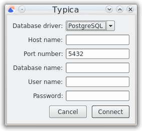

Connecting to a database
When opening Typica, if you have not previously connected to a database, you will be prompted for information needed to connect to that database.
If you do not want to connect to a database, you can click the Cancel button, but doing so means that most of the features of Typica will not work. Clicking the Connect button will cause Typica to attempt to connect to the database with the information provided in the fields. An error message will be presented if that connection attempt fails.
After either successfully connecting to a database or cancelling, you will be prompted to open a configuration file.
Field descriptions
Database driver
Currently the only database supported is PostgreSQL.
Host name
This identifies the computer the database is installed on. If the database is on the same computer as Typica, this can be localhost otherwise it will most likely be an IP address for another computer on your network.
Port number
PostgreSQL normally communicates on port 5432 but if you have PostgreSQL configured to communicate over a different port this field should be changed to match.
Database name
During installation, the PostgreSQL installer creates a database called postgres. If you've created a new database for use with Typica, its name should be used.
User name
During installation, the PostgreSQL installer creates a database user called postgres. If you don't want to create separate users, this account can be used. Typica keeps track of which database user performed many data entry tasks so it is recommended to create new users for everybody who will be using Typica.
Password
This is the password previously set for the database user. If you are using the postgres user, this was set during PostgreSQL installation.